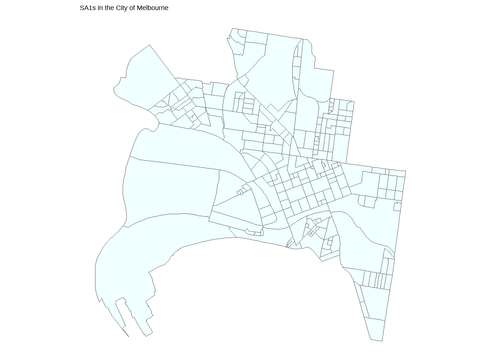
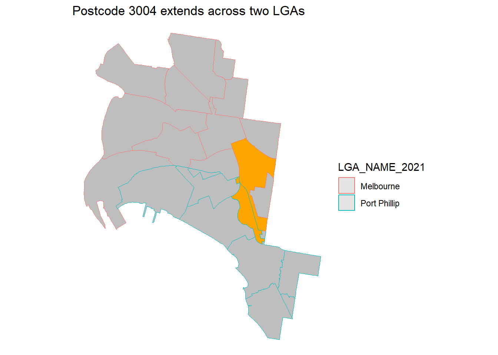

Chapter 11 (APPENDIX) {aussiemaps} Vignette
Extracted from https://gh.carlosyanez.id.au/aussiemaps/articles/aussiemaps.html on Sunday 22 January 2023
11.1 {aussiemaps} - Yet another maps package
This package has been built to facilitate the use of the geographic boundary files published by the Australian Bureau of Statistics (ABS). The ABS has published several boundary files - i.e. the Australian Statistical Geography Standard (ASGS) from 2006 onwards and the Australian Standard Geographical Classification (ASGC) before that - covering both:
- Statistical Geographic Structures created and maintained by the ABS - and used to collect data.
- Non-ABS structure, e.g Postal Areas, Electoral Divisions, LGA boundaries.
This package has four versions of the above, aligned with Census years 2006, 2011,2016 and 2021. This makes it easy to mix use with Census data packs or the {auscensus} package.
This package provides access to a processed version of those boundaries - as sf objects, allowing it to cater for the following scenarios:
- Get the boundaries of an electoral division across time.
- Get all the S1 or S1 areas within a Council area.
- Get all postcodes in a state or territory.
This repository also contains the R script used to process the files. Although not tested, the functions could also accommodate BYO structures for other years.
11.2 Getting started.
The core function of this package is get_map(), which retrieves the sf files. get_map provides several filters to narrow down the data retrieved and avoid getting everything unless is needed. The key parameters for this function are:
- How the data will be filtered (e.g. return only objects in a particular state, council or metro area)
- Which year/version of the data will be retrieved?
- Which aggregation will be used (e.g. which will be the resulting objects)
Filters and column names follow the same name convention used in the original ABS files. The function list_attributes(), will present them in tibble format:
list_attributes() |>
head(10)## ℹ Running gh query ℹ Running gh query, got 100 records of about 200## # A tibble: 10 × 5
## attributes `2006` `2011` `2016` `2021`
## <chr> <chr> <chr> <chr> <chr>
## 1 CD_CODE CD_CODE_2006 <NA> <NA> <NA>
## 2 CED_CODE CED_CODE_2006 CED_CODE_2011 CED_CODE_2016 CED_CODE_2021
## 3 CED_NAME CED_NAME_2006 CED_NAME_2011 CED_NAME_2016 CED_NAME_2021
## 4 IARE_CODE IARE_CODE_2006 IARE_CODE_2011 IARE_CODE_2016 IARE_CODE_2021
## 5 IARE_NAME IARE_NAME_2006 IARE_NAME_2011 IARE_NAME_2016 IARE_NAME_2021
## 6 ILOC_CODE ILOC_CODE_2006 ILOC_CODE_2011 ILOC_CODE_2016 ILOC_CODE_2021
## 7 ILOC_NAME ILOC_NAME_2006 ILOC_NAME_2011 ILOC_NAME_2016 ILOC_NAME_2021
## 8 IREG_CODE IREG_CODE_2006 IREG_CODE_2011 IREG_CODE_2016 IREG_CODE_2021
## 9 IREG_NAME IREG_NAME_2006 IREG_NAME_2011 IREG_NAME_2016 IREG_NAME_2021
## 10 LGA_CODE LGA_CODE_2006 LGA_CODE_2011 LGA_CODE_2016 LGA_CODE_2022Let’s say we want to retrieve all SA1 in the City of Melbourne for 2016 - this can be done via:
melbourne_sa1 <- get_map(filters=list(LGA_NAME_2016=c("Melbourne")),
year=2016,
aggregation = c("SA1_MAINCODE_2016"))## Updating layer `id' to data source `C:/Users/carlo/OneDrive/Documents/.aussiemaps_cache/temp.gpkg' using driver `GPKG'
## Writing 249 features with 36 fields without geometries.
## Reading query `SELECT * FROM '2016_Victoria' WHERE id IN (SELECT id FROM id)'
## from data source `C:\Users\carlo\OneDrive\Documents\.aussiemaps_cache\temp.gpkg' using driver `GPKG'
## Simple feature collection with 249 features and 37 fields
## Geometry type: MULTIPOLYGON
## Dimension: XY
## Bounding box: xmin: 144.8971 ymin: -37.85067 xmax: 144.9914 ymax: -37.77545
## Geodetic CRS: GDA94#just an empty plot
melbourne_sa1 |>
ggplot()+
geom_sf(fill="azure1") +
theme_void() +
labs(title="SA1s in the City of Melbourne")11.3 Filtering via regular expressions
The filter arguments are intended to be regular expressions, for instance:
preston <- get_map(filters=list(SSC_NAME_2016=c("Preston")),
year=2016,
aggregation = c("SSC_NAME_2016"))## Updating layer `id' to data source `C:/Users/carlo/OneDrive/Documents/.aussiemaps_cache/temp.gpkg' using driver `GPKG'
## Writing 119 features with 36 fields without geometries.
## Reading query `SELECT * FROM '2016_New.South.Wales' WHERE id IN (SELECT id FROM id)'
## from data source `C:\Users\carlo\OneDrive\Documents\.aussiemaps_cache\temp.gpkg' using driver `GPKG'
## Simple feature collection with 36 features and 35 fields
## Geometry type: MULTIPOLYGON
## Dimension: XY
## Bounding box: xmin: 150.8487 ymin: -33.95678 xmax: 150.8979 ymax: -33.9263
## Geodetic CRS: GDA94
## Updating layer `id' to data source `C:/Users/carlo/OneDrive/Documents/.aussiemaps_cache/temp.gpkg' using driver `GPKG'
## Writing 119 features with 36 fields without geometries.
## Reading query `SELECT * FROM '2016_Queensland' WHERE id IN (SELECT id FROM id)'
## from data source `C:\Users\carlo\OneDrive\Documents\.aussiemaps_cache\temp.gpkg' using driver `GPKG'
## Simple feature collection with 5 features and 35 fields
## Geometry type: MULTIPOLYGON
## Dimension: XY
## Bounding box: xmin: 148.6178 ymin: -27.68302 xmax: 152.0004 ymax: -20.34465
## Geodetic CRS: GDA94
## Updating layer `id' to data source `C:/Users/carlo/OneDrive/Documents/.aussiemaps_cache/temp.gpkg' using driver `GPKG'
## Writing 119 features with 36 fields without geometries.
## Reading query `SELECT * FROM '2016_Tasmania' WHERE id IN (SELECT id FROM id)'
## from data source `C:\Users\carlo\OneDrive\Documents\.aussiemaps_cache\temp.gpkg' using driver `GPKG'
## Simple feature collection with 2 features and 35 fields
## Geometry type: MULTIPOLYGON
## Dimension: XY
## Bounding box: xmin: 145.9943 ymin: -41.3658 xmax: 146.1147 ymax: -41.24951
## Geodetic CRS: GDA94
## Updating layer `id' to data source `C:/Users/carlo/OneDrive/Documents/.aussiemaps_cache/temp.gpkg' using driver `GPKG'
## Writing 119 features with 36 fields without geometries.
## Reading query `SELECT * FROM '2016_Victoria' WHERE id IN (SELECT id FROM id)'
## from data source `C:\Users\carlo\OneDrive\Documents\.aussiemaps_cache\temp.gpkg' using driver `GPKG'
## Simple feature collection with 74 features and 37 fields
## Geometry type: MULTIPOLYGON
## Dimension: XY
## Bounding box: xmin: 144.979 ymin: -37.75573 xmax: 145.0383 ymax: -37.72792
## Geodetic CRS: GDA94
## Updating layer `id' to data source `C:/Users/carlo/OneDrive/Documents/.aussiemaps_cache/temp.gpkg' using driver `GPKG'
## Writing 119 features with 36 fields without geometries.
## Reading query `SELECT * FROM '2016_Western.Australia' WHERE id IN (SELECT id FROM id)'
## from data source `C:\Users\carlo\OneDrive\Documents\.aussiemaps_cache\temp.gpkg' using driver `GPKG'
## Simple feature collection with 2 features and 35 fields
## Geometry type: MULTIPOLYGON
## Dimension: XY
## Bounding box: xmin: 115.6286 ymin: -33.44906 xmax: 116.1876 ymax: -32.79339
## Geodetic CRS: GDA94preston |>
select(SSC_NAME_2016,UCL_NAME_2016,STE_NAME_2016)## Simple feature collection with 8 features and 3 fields
## Geometry type: MULTIPOLYGON
## Dimension: XY
## Bounding box: xmin: 115.6286 ymin: -41.3658 xmax: 152.0004 ymax: -20.34465
## Geodetic CRS: GDA94
## # A tibble: 8 × 4
## SSC_NAME_2016 UCL_NAME_2016 STE_NAME_2016 geom
## <chr> <chr> <chr> <MULTIPOLYGON [°]>
## 1 Prestons Sydney New South Wales (((150.855 -33.95284, 150.8542 -33.95265, 150.8528 -33.95232, 150…
## 2 Preston (Vic.) Melbourne Victoria (((144.9984 -37.7301, 145.0005 -37.73032, 145.002 -37.73047, 145.…
## 3 Preston (Toowoomba - Qld) Remainder of State/Territory (Qld) Queensland (((151.9545 -27.64808, 151.9559 -27.64938, 151.9545 -27.64808, 15…
## 4 Preston (Whitsunday - Qld) Remainder of State/Territory (Qld) Queensland (((148.6227 -20.3747, 148.6229 -20.37434, 148.623 -20.37383, 148.…
## 5 Preston Beach Remainder of State/Territory (WA) Western Australia (((115.6492 -32.88399, 115.6491 -32.88388, 115.649 -32.88336, 115…
## 6 Preston Settlement Remainder of State/Territory (WA) Western Australia (((116.117 -33.40392, 116.122 -33.40121, 116.1222 -33.39111, 116.…
## 7 Preston (Tas.) Remainder of State/Territory (Tas.) Tasmania (((146.076 -41.33851, 146.0757 -41.33829, 146.0756 -41.3382, 146.…
## 8 South Preston Remainder of State/Territory (Tas.) Tasmania (((146.076 -41.33851, 146.0759 -41.33858, 146.0758 -41.33867, 146…Whereas
prestons <- get_map(filters=list(SSC_NAME_2016=c("^Pres"),
STE_NAME_2016=c("Wales","^T")
),
year=2016,
aggregation = c("SSC_NAME_2016"))## Updating layer `id' to data source `C:/Users/carlo/OneDrive/Documents/.aussiemaps_cache/temp.gpkg' using driver `GPKG'
## Writing 38 features with 36 fields without geometries.
## Reading query `SELECT * FROM '2016_New.South.Wales' WHERE id IN (SELECT id FROM id)'
## from data source `C:\Users\carlo\OneDrive\Documents\.aussiemaps_cache\temp.gpkg' using driver `GPKG'
## Simple feature collection with 36 features and 35 fields
## Geometry type: MULTIPOLYGON
## Dimension: XY
## Bounding box: xmin: 150.8487 ymin: -33.95678 xmax: 150.8979 ymax: -33.9263
## Geodetic CRS: GDA94
## Updating layer `id' to data source `C:/Users/carlo/OneDrive/Documents/.aussiemaps_cache/temp.gpkg' using driver `GPKG'
## Writing 38 features with 36 fields without geometries.
## Reading query `SELECT * FROM '2016_Tasmania' WHERE id IN (SELECT id FROM id)'
## from data source `C:\Users\carlo\OneDrive\Documents\.aussiemaps_cache\temp.gpkg' using driver `GPKG'
## Simple feature collection with 2 features and 35 fields
## Geometry type: MULTIPOLYGON
## Dimension: XY
## Bounding box: xmin: 146.0066 ymin: -41.33851 xmax: 146.1147 ymax: -41.09649
## Geodetic CRS: GDA94prestons |>
select(SSC_NAME_2016,UCL_NAME_2016,STE_NAME_2016)## Simple feature collection with 3 features and 3 fields
## Geometry type: POLYGON
## Dimension: XY
## Bounding box: xmin: 146.0066 ymin: -41.33851 xmax: 150.8979 ymax: -33.9263
## Geodetic CRS: GDA94
## # A tibble: 3 × 4
## SSC_NAME_2016 UCL_NAME_2016 STE_NAME_2016 geom
## <chr> <chr> <chr> <POLYGON [°]>
## 1 Prestons Sydney New South Wales ((150.855 -33.95284, 150.8542 -33.95265, 150.8528 -33.95232, 150.8518 -33.952…
## 2 Preservation Bay Remainder of State/Territory (Tas.) Tasmania ((146.0401 -41.09734, 146.0403 -41.09661, 146.0403 -41.09649, 146.0404 -41.09…
## 3 Preston (Tas.) Remainder of State/Territory (Tas.) Tasmania ((146.0962 -41.25072, 146.0963 -41.2506, 146.0964 -41.25055, 146.0964 -41.250…11.4 Even more complex filtering
If more complex subsetting is needed, it is possible to pass a table with the elements to be selected. In order to do that, list_structure() comes to help. This function uses the same year and filters parameters than get_map() (actually this function calls the former if no table is provided). Once you have the dataset, you can use any ad-hoc filter to get the needed structures. For example
greater_sydney <- list_structure(year=2021,filters=list(GCCSA_NAME_2021="Greater Sydney"))
#use_cache option stores the results/reuses pre-processed results
sydney_area <- get_map(filter_table = greater_sydney,
year=2021,
aggregation = "GCCSA_NAME_2021",
use_cache = TRUE) ## loading from cache: C:/Users/carlo/OneDrive/Documents/.aussiemaps_cache/8c99638c.gpkg## Reading layer `8c99638c' from data source `C:\Users\carlo\OneDrive\Documents\.aussiemaps_cache\8c99638c.gpkg' using driver `GPKG'
## Simple feature collection with 1 feature and 39 fields
## Geometry type: MULTIPOLYGON
## Dimension: XY
## Bounding box: xmin: 149.9719 ymin: -34.33116 xmax: 151.6301 ymax: -33.00031
## Geodetic CRS: GDA2020#outline
# all suburbs starting wit A
suburbs_a_filter <- greater_sydney |>
filter(str_detect(SAL_NAME_2021,"^A"))
suburbs_a <- get_map(filter_table = suburbs_a_filter,
year=2021,
aggregation = "SAL_NAME_2021") |>
mutate(border="orange",fill="orange")## Updating layer `id' to data source `C:/Users/carlo/OneDrive/Documents/.aussiemaps_cache/temp.gpkg' using driver `GPKG'
## Writing 473 features with 42 fields without geometries.
## Reading query `SELECT * FROM '2021_New.South.Wales' WHERE id IN (SELECT id FROM id)'
## from data source `C:\Users\carlo\OneDrive\Documents\.aussiemaps_cache\temp.gpkg' using driver `GPKG'
## Simple feature collection with 473 features and 40 fields
## Geometry type: MULTIPOLYGON
## Dimension: XY
## Bounding box: xmin: 150.6731 ymin: -34.25982 xmax: 151.4437 ymax: -33.25952
## Geodetic CRS: GDA2020ggplot() +
geom_sf(data=sydney_area,fill="white",colour="black")+
geom_sf(data=suburbs_a,fill="orange") +
labs(title="Suburbs starting with A - Sydney") +
theme_void()
11.5 Aggregation
It is worth noticing that the aggregation parameter accepts more than one variable. Those parameters are passed to dplyr::group_by() before aggregation - thus more variables will impact how sf objects are aggregated. For instance, if we look at the postal areas (ABS approximation of a postcode) in the cities of Melbourne and Port Phillip:
poas_inner_melbourne <- get_map(filters=list(LGA_NAME_2022=c("Melbourne","Phillip$")),
year=2021,
aggregation = c("POA_NAME_2021","LGA_NAME_2022"))## Updating layer `id' to data source `C:/Users/carlo/OneDrive/Documents/.aussiemaps_cache/temp.gpkg' using driver `GPKG'
## Writing 626 features with 42 fields without geometries.
## Reading query `SELECT * FROM '2021_Victoria' WHERE id IN (SELECT id FROM id)'
## from data source `C:\Users\carlo\OneDrive\Documents\.aussiemaps_cache\temp.gpkg' using driver `GPKG'
## Simple feature collection with 626 features and 43 fields
## Geometry type: MULTIPOLYGON
## Dimension: XY
## Bounding box: xmin: 144.8971 ymin: -37.89172 xmax: 145.0105 ymax: -37.77543
## Geodetic CRS: GDA2020poas_inner_melbourne |>
mutate(colour=case_when(
POA_NAME_2021=="3004" ~ "orange",
TRUE ~ "grey"
)) |>
ggplot()+
geom_sf(aes(fill=colour,colour=LGA_NAME_2022)) +
scale_fill_identity() +
theme_void() +
labs(title="Postcode 3004 extends across two LGAs")## Using external data
This package provides sf data, thus the result can be easily merged with any other data frame. Since data has been taken from the ABS and the output contains both names and codes of geographic structures, data can be joined using an un-ambiguous key. Furthermore, with {auscensus}, this package can be used as data filters to retrieve said data in the first place. For example:
# Chileans by Commonwealth Electoral Divisions in Metropolitan Brisbane, 2021
attr <- list_structure(year=2021,filters=list(GCCSA_NAME_2021=c("Brisbane"))) |>
distinct(CED_NAME_2021)
chileans <- auscensus::get_census_summary(table_number= "09",
selected_years = "2021",
geo_structure = "CED",
geo_unit_names = attr$CED_NAME_2021,
attribute = list(Chileans=c("Persons_chile_total")),
reference_total = list(Total=c("Persons_total_total")),
percentage_scale =100)
brisbane_ced <- get_map(filters = list(GCCSA_NAME_2021=c("Brisbane")),
year = 2021,
aggregation = c("CED_NAME_2021"),
use_cache = TRUE)## loading from cache: C:/Users/carlo/OneDrive/Documents/.aussiemaps_cache/b26452fe.gpkg## Reading layer `b26452fe' from data source `C:\Users\carlo\OneDrive\Documents\.aussiemaps_cache\b26452fe.gpkg' using driver `GPKG'
## Simple feature collection with 15 features and 39 fields
## Geometry type: MULTIPOLYGON
## Dimension: XY
## Bounding box: xmin: 152.0734 ymin: -28.36387 xmax: 153.5467 ymax: -26.45233
## Geodetic CRS: GDA2020chileans$Value## [1] 85 109 64 228 44 90 241 87 66 180 267 107 96 223 66brisbane_ced |>
left_join(chileans,by=c("CED_NAME_2021"="Unit")) |>
ggplot(aes(fill=Value,colour=Value)) +
geom_sf() +
scale_fill_continuous()+
labs(title="Chileans in Bribane's Federal Electorates") +
theme_void()
11.6 Data Aggregation
As a bonus function, geo_aggregate() aggregates data, transforming between geographic structures. For instance, let’s imagine that for the previous case, it is only possible to get data by SA2. geo_aggregate() can aggregate the data to obtain an approximation for each electorate. When an SA1 is not fully contained by an electorate, the function will use the overlapping area as the weighting factor.
attr <- list_structure(year=2021,filters=list(GCCSA_NAME_2021=c("Brisbane"))) |>
distinct(SA2_CODE_2021)
chileans_sa2 <- auscensus::get_census_summary(table_number= "09",
selected_years = "2021",
geo_structure = "SA2",
geo_unit_codes = attr$SA2_CODE_2021,
attribute = list(Chileans=c("Persons_chile_total"))) |>
rename("SA2_CODE_2021"="Census_Code")
# please note these Electoral divisions are not built from SA2s - proportional allocation will result in factional
# Therefore - This is an approximation
chileans <- geo_aggregate(original_data = chileans_sa2,
values_col = "Value",
original_geo = "SA2_CODE_2021",
new_geo = "CED_NAME_2021",
grouping_col = c("Year","Attribute"),
year=2021) |>
rename("Unit"="CED_NAME_2021")
brisbane_ced |>
left_join(chileans,by=c("CED_NAME_2021"="Unit")) |>
ggplot(aes(fill=Value,colour=Value)) +
geom_sf() +
scale_fill_continuous()+
labs(title="Chileans in Bribane's Federal Electorates") +
theme_void()